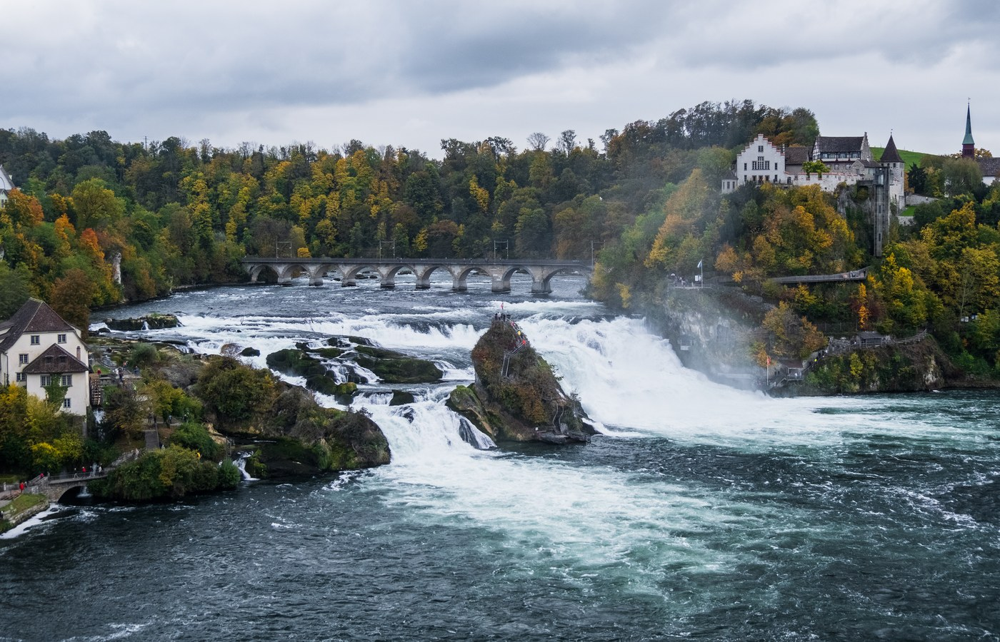
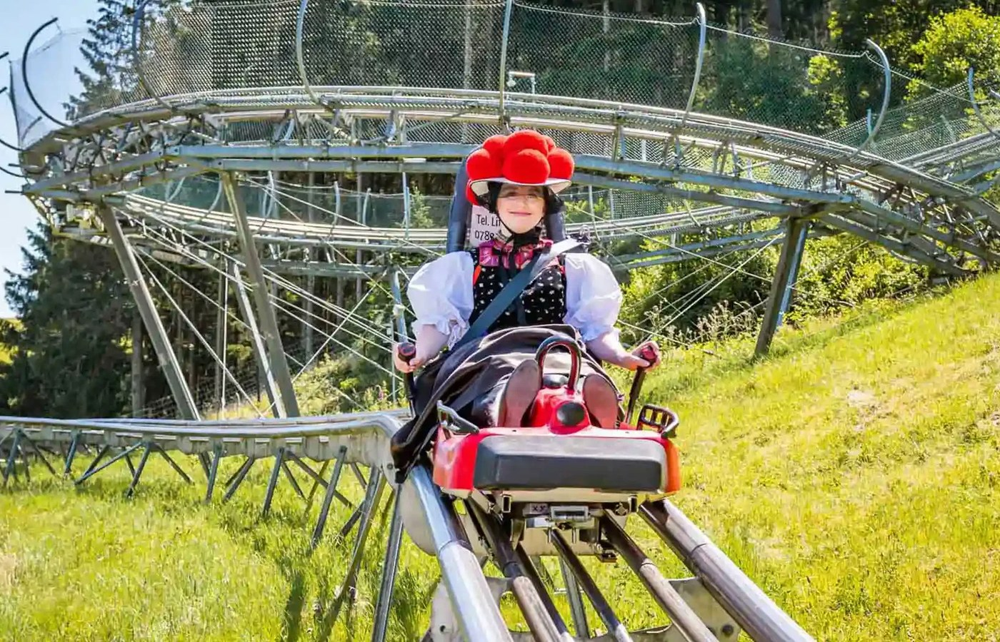
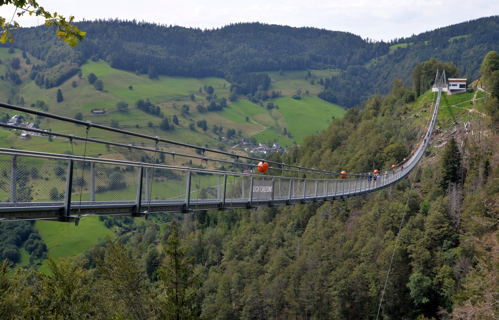

בסיס ראשון — נבחר
Landhotel Tanneneck
הבסיס הראשון שלנו בלופינגן: 6 לילות, מלון משפחתי, ארוחת בוקר, חניה ו־Hochschwarzwald Card.
LöffingenHochschwarzwald Cardבוקר כלול

יום הגעה רגוע: רכבים, נסיעה למלון, צ׳ק־אין וערב קל.

פתיחה מקומית: חיות ומתקנים בבוקר, פסגת היער אחר הצהריים.

מגלשות בחמישי: בוקר אקשן, מפלים/גשר תלוי, ואז אגם טיטיזה.

מפלי הריין, חבלים/שיט, שוקולד ועיירה מצוירת.
שבת קלה יותר: מופע עופות דורסים, האכלת קופים וקצב משפחתי רגוע.

יום מים משפחתי לפני המעבר, עם הזמנה אונליין מראש.

עוזבים את המלון הראשון, עושים עצירת עיר טובה באמצע, ומגיעים לבסיס השני.

יום פארק מלא — השיא הראשון באזור Rust.
קולמר בבוקר, פארק הקופים בצהריים, כפר אלזסי לקינוח.

יום בחירה לפי מזג אוויר ורצון הקבוצה.

עיר יפה לסיום: קתדרלה, Petite France, שיט אופציונלי וארוחת סיכום.
צ׳ק־אאוט, נסיעה לשדה, ואם יש זמן — עצירה קצרה בדרך.
הבסיס הראשון שלנו בלופינגן: 6 לילות, מלון משפחתי, ארוחת בוקר, חניה ו־Hochschwarzwald Card.
הלינה השנייה קרובה לפארקים, כדי לחסוך נסיעות בבוקר ולסיים את הטיול בשיא.

Colmar → Montagne des Singes → Riquewihr/Ribeauvillé — יום צבעוני; Strasbourg ביום נפרד.
במקום מוזיאונים ונופים בלבד: מקומות שבהם הילדים מטפסים, קופצים, גולשים, משחקים ורצים. סימון 🎟️ Red Card אומר שהאטרקציה מופיעה ברשימת Hochschwarzwald Card; ירוק = מחיר Card/הטבה מוזלת. רשימת Red Card הרשמית · עותק ייחוס מלא ששמרתי.

פארק חבלים/טיפוס ממש בטיטיזה, ליד אזור האגם: מסלולים בין העצים, גשרים, אומגות ואתגר פיזי שהילדים באמת עושים.
אומגות ארוכות מעל היער באזור Schiltach / Kinzigtal — יותר אדרנלין מאשר פארק חבלים רגיל.

אופציה פעילה ליד פלדברג: אזור מקורה עם טרמפולינות/טיפוס ופעילויות שמתאימות במיוחד כשמזג האוויר לא מושלם.
מגלשת הרים ארוכה ומהירה — בדיוק מסוג הדברים שילדים זוכרים. מי שלא עולה יכול להישאר לקפה ונוף.

מגלשת הרים קצרה וכיפית בגוטאך. כדאי לעשות אותה לפני Todtnau, כדי שהילדים לא ישוו אותה מיד למגלשה הארוכה יותר.

מפלי טודנאו והגשר התלוי לידם — שילוב חזק של טבע, תמונות ואדרנלין קל בלי יום פארק מלא.
מפלי הריין הם אופציית יום שוויצרי מרשימה: תצפיות, סירות, ובצד הדרומי גם פארק חבלים גדול לילדים שאוהבים אתגר.
שתי עצירות משפחתיות באלזס: פארק קופים פתוח ליד Kintzheim וסדנת/חנות שוקולד ליד Ribeauvillé.
פארק ציפורים וקופים עם מופע נשרים והאכלת קופים בשעות מוגדרות. מתאים כחלופה משפחתית ליום טבע/חיות.
פארק משפחתי עם מתקנים, גשר תלוי, חיות ואווירת טבע — הרבה יותר “לעשות” מאשר מוזיאון, ועדיין לא ענק כמו Europa-Park.
שילוב טוב לילדים: פארק חיות עם מתקנים קטנים ואזורי משחק. פחות “להסתכל על נוף”, יותר לזוז ולעבור בין דברים.
פארק קטן וקל ליד אזור Rust, טוב במיוחד לילדים צעירים או ליום שלא רוצים בו עוד פארק ענק אחרי Europa-Park.
כמה רעיונות לקניות לפי מצב הרוח: מרכזי עיר נעימים, בוטיקים ומזכרות, חנויות יופי, אאוטלט למותגים וקניות פרקטיות ליד הלינה.
אפשרות טובה לקניות עירוניות בלי להיכנס לעיר ענקית: רחובות מרכזיים, בתי קפה, חנויות אופנה ומוצרים יומיומיים.

הנקודה הכי ברורה למי שרוצה Sephora וקניות צרפתיות. עדיף לתכנן כחלון קניות מוגדר ולא כיום הליכה אינסופי.

לא “יום קניות” רשמי, אלא קניות קטנות תוך כדי יום אלזס: חנויות עיצוב, מתוקים, מזכרות ותמונות בין הרחובות הצבעוניים.

אופציה למותגים ואאוטלט, אבל רק אם ממש רוצים. זה לא “על הדרך” באופן מושלם, ולכן צריך להישאר בחירה מודעת.

קניות קטנות בלי נסיעה: שעוני קוקייה, שוקולד, גלידה, צעצועים ומזכרות סביב הטיילת. טוב לילדים כי זה קצר וברור.
לפעמים הקנייה הכי שימושית היא לא אאוטלט: מים, חטיפים, תרופות, מגבונים, ציוד לבריכה ודברים שחסרים בדירה/מלון.
הבסיס הראשון כבר נבחר: Landhotel Tanneneck בלופינגן ל־22–28.09. לאחר מכן עוברים לאזור Rust כדי להיות קרובים לפארקים.
המלון הראשון שסגרנו למשפחה: מלון כפרי בלופינגן, מתאים לקבוצה גדולה ונותן בסיס נוח לחלק של היער השחור המרכזי/דרומי.
הבסיס השני מיועד לסוף הטיול: קרוב ל־Europa-Park; ב־01.10 בוחרים בין Rulantica לבין יום נוסף בפארק לפי מזג האוויר ורצון הקבוצה.
מקום אחד עם הסבר ברור למשפחה: איזה כרטיס קונים, באיזה לינק משתמשים, ומה לבדוק לפני התשלום.
אנחנו מגיעים עם Hochschwarzwald Red Card. בגלל שאנחנו קבוצה גדולה, כולם צריכים להזמין כרטיס אונליין מראש — לא להגיע בלי כרטיסים.
Badeparadies Schwarzwald הוא קומפלקס מים גדול ליד טיטיזה. בפועל הוא מחולק לשלושה אזורים שונים, ולכן חשוב לקנות לכל אדם את האזור הנכון — אחרת אפשר לשלם על משהו שלא מתאים לו.
אזור הילדים והמשפחה: מגלשות, בריכת גלים ואטרקציות מים. זה הכרטיס הנכון לילדים.
אזור בריכות רגוע בבגד ים, עם אווירת דקלים ומים חמימים. מתאים לרוב ההורים והמבוגרים, ומתואר ככולל גם גישה ל־Galaxy.
אזור סאונות וספא למבוגרים 16+. פירוט לגבי אופי הכרטיס מופיע בטבלת סוגי הכרטיסים למטה.
| מי? | הכרטיס המומלץ | מסלול הזמנה | הערה חשובה |
|---|---|---|---|
| ילדים | Galaxy Schwarzwald | Red Card / Hochschwarzwald | אזור הילדים והמשפחה: מגלשות, בריכת גלים ואטרקציות מים. |
| הורים שמשגיחים ורוצים גם להירגע | Palm Oasis | Red Card / Hochschwarzwald | הבחירה הטובה להורים: אזור רגוע בבגד ים, ומתואר ככולל גישה גם ל־Galaxy. לא לקנות Galaxy-only אם רוצים Palm Oasis. |
| מבוגרים / סבים וסבתות שרוצים בריכות רגועות | Palm Oasis | Red Card / Hochschwarzwald | בריכות חמות, אווירת דקלים ואזור מינרלי בבגד ים. |
| מבוגרים שרוצים ספא/סאונה מלאה | Palais Vital | חנות הכרטיסים הרגילה | 16+ בלבד; אזור סאונות בעירום מלא בסגנון German style / textile-free / nude. כרטיס Palais Vital כולל גישה גם ל־Palm Oasis ול־Galaxy. |
| יום | Palm Oasis | Palais Vital | Galaxy Schwarzwald |
|---|---|---|---|
| שני | 09:00–22:00 | 09:00–22:00 | סגור |
| שלישי | 09:00–22:00 | 09:00–22:00 | סגור |
| רביעי | 09:00–22:00 | 09:00–22:00 | 14:00–22:00 |
| חמישי | 09:00–22:00 | 09:00–22:00 | 14:00–22:00 |
| שישי | 09:00–22:00 | 09:00–22:00 | 14:00–22:00 |
| שבת | 09:00–22:00 Family Day — ללא מגבלת גיל | 09:00–22:00 | 09:00–22:00 |
| ראשון | 09:00–22:00 Family Day — ללא מגבלת גיל | 09:00–22:00 | 09:00–22:00 |
ליום משפחתי מלא, שבת/ראשון סביב 09:30–10:00 הם בדרך כלל הכי בטוחים. בתוכנית המעודכנת Badeparadies מתוכנן ליום ראשון 27.09 כיום משפחתי. עדיין צריך לבחור את תאריך הביקור המדויק בעמוד השעות לפני שקונים.
הסבר קצר לילדים, בלי מילים מסובכות — ועוד משחק קטן כדי להכיר את המקומות לפני הטיול.

אגם גדול ויפה. אפשר לטייל ליד המים, לאכול גלידה, לצלם תמונות ואולי לעשות שייט.
אם מזג האוויר לא טוב לנוף — אפשר לקפוץ, לטפס ולהוציא אנרגיה במקום מקורה.
מגלשת הרים על ההר. מי שאוהב מהירות ואקשן כנראה יחייך הרבה.
אומגות ארוכות מעל היער. מתאים רק מגיל 12 ומשקל 40–115 ק״ג, אז זו אופציה לילדים הגדולים והמבוגרים האמיצים.
עיר שנראית כמו ציור: בתים צבעוניים, תעלות קטנות וגשרים. מקום טוב למשחק “מצא את הבית הכי יפה”.

כפר קטן עם סמטאות ובתים מיוחדים. מרגיש קצת כמו סיפור אגדה.
מפלים גדולים וגשר תלוי גבוה. מתאים לילדים שאוהבים קצת פחד, תמונות ונוף.
מפלים ענקיים בשווייץ, עם אפשרות לסירה ופארק חבלים למי שרוצה אתגר.
מופע נשרים וקופים. צריך להגיע בשעות הנכונות כדי לראות את ההאכלה והמופע.
פארק ענק עם מתקנים, רכבות הרים ומופעים. כל אחד יכול לבחור את רמת האומץ שלו.
פארק מים גדול ליד Europa-Park. יום של מגלשות, בריכת גלים ומנוחה אחרי יום פארק.
לחצו על תשובה. בכל שאלה תקבלו רמז על מקום בטיול.
מתחילים? נסו לנחש לפי הרמז.
תמונות יעד מדויקות יותר, עם מקום להחליף בהמשך לתמונות רשמיות או משפחתיות.
עכשיו זה חלק חי של הברושור: עוברים עם העכבר או לוחצים על מקום — התמונה משתנה. לחיצה פותחת 5 עובדות אקראיות, ובכל לחיצה נוספת מקבלים שילוב חדש.